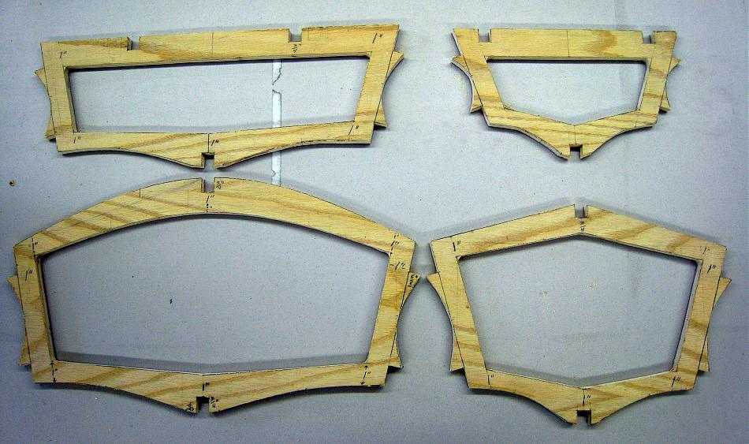

| Cross Sections | Menu Previous Page Next Page |
|

The four single-chine "Sea Bee" cross sections shown above are constructed of 1/2" ( 12.5mm) plywood. Marine or Exterior grade plywood is recommended. Offsets provided in the Designs Menu of the "Folding Kayak Builders Manual" are used to define the outline of the cross sections. Instructions for Using Offsets
can also be found in the Folding Kayak Builders Manual. Use the (BACK) key to return. All boats in the manual have between 4 and 8 cross sections. The procedure for drawing and cutting the "single chine" sections is generally the same for all boats. Multi-chine Baidarka's differ slightly as will be pointed later in this section.
|
|